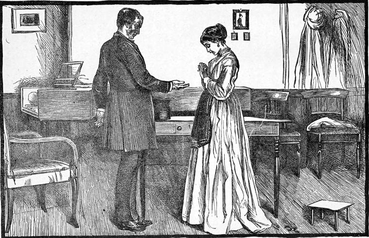

Mr. Sargent's next application to Mr. Worboise, made on the morning after the decision of the court in his favor, shared the fate of all his preceding attempts. Mr. Worboise smiled it off. There was more inexorableness expressed in his smile than in another's sullen imprecation. The very next morning Mrs. Boxall was served with notice to quit at the approaching quarter-day; for she had no agreement, and paid no rent, consequently she was tenant only on sufferance. And now Mr. Stopper's behavior toward them underwent a considerable change; not that he was in the smallest degree rude to them; but, of course, there was now no room for that assumption of the confidential by which he had sought to establish the most friendly relations between himself and the probable proprietors of the business in which he hoped to secure his position, not merely as head-clerk, but as partner. The door between the house and the office was once more carefully locked, and the key put in his drawer, and having found how hostile his new master was to the inhabitants of the house, he took care to avoid every suspicion of intimacy with them.
Mrs. Boxall's paroxysm of indignant rage when she received the notice to quit was of course as impotent as the bursting of a shell in a mountain of mud. From the first, however, her anger had had this effect, that everybody in the court, down to lowly and lonely Mr. Dolman, the cobbler, knew all the phases of her oppression and injury. Lucy never said a word about it, save to Mr. and Mrs. Morgenstern, whose offer of shelter for herself and her grandmother till they could see what was to be done, she gratefully declined, knowing that her grandmother would die rather than accept such a position.
"There's nothing left for me in my old age but the work-house," said Mrs. Boxall, exhausted by one of her outbursts of fierce vindictive passion against the author of her misfortunes, which, as usual, ended in the few bitter tears that are left to the aged to shed.
"Grannie, grannie," said Lucy, "don't talk like that. You have been a mother to me. See if I cannot be a daughter to you. I am quite able to keep you and myself too as comfortable as ever. See if I can't."
"Nonsense, child. It will be all that you can do to keep yourself; and I'm not a-going to sit on the neck of a young thing like you, just like a nightmare, and have you wishing me gone from morning to night."
"I don't deserve that you should say that of me, grannie. But I'm sure you don't think as you say. And as to being able, with Mrs. Morgenstern's recommendation I can get as much teaching as I can undertake. I am pretty sure of that, and you know it will only be paying you back a very little of your own, grannie."
Before Mrs. Boxall could reply, for she felt reproached for having spoken so to her grand-daughter, there was a tap at the door, and Mr. Kitely entered.
"Begging your pardon, ladies, and taking the liberty of a neighbor, I made bold not to trouble you by ringing the bell I've got something to speak about in the way of business."
So saying, the worthy bookseller, who had no way of doing anything but going at it like a bull, drew a chair near the fire.
"With your leave, ma'am, it's as easy to speak sitting as standing. So, if you don't object, I'll sit down."
"Do sit down, Mr. Kitely," said Lucy. "We're glad to see you—though you know we're in a little trouble just at present."
"I know all about that, and I don't believe there's a creature in the court, down to Mrs. Cook's cat, that isn't ready to fly at that devil's limb of a lawyer. But you see, ma'am, if we was to murder him it wouldn't be no better for you. And what I come to say to you is this: I've got a deal more room on my premises than I want, and it would be a wonderful accommodation to me, not to speak of the honor of it, if you would take charge of my little woman for me. I can't interfere with her, you know, so as to say she's not to take care of me, you know, for that would go nigh to break her little heart; but if you would come and live there as long as convenient to you, you could get things for yourselves all the same as you does here, only you wouldn't have nothing to be out of pocket for house-room, you know. It would be the making of my poor motherless Mattie."
"Oh! we're not going to be so very poor as grannie thinks, Mr. Kitely," said Lucy, trying to laugh, while the old lady sat rocking herself to and fro and wiping her eyes. "But I should like to move into your house, for there's nowhere I should be so much at home."
"Lucy!" said her grandmother, warningly.
"Stop a bit, grannie. Mr. Kitely's a real friend in need; and if I had not such a regard for him as I have, I would take it as it's meant. I'll tell you what, Mr. Kitely; it only comes to this, that I have got to work a little harder, and not lead such an idle life with my grannie here."
"You idle, miss!" interrupted the bookseller. "I never see any one more like the busy bee than yourself, only that you was always a-wastin' of your honey on other people; and that they say ain't the way of the bees."
"But you won't hear me out, Mr. Kitely. It would be a shame of me to go and live in anybody's house for nothing, seeing I am quite able to pay for it. Now, if you have room in your house—"
"Miles of it," cried the bookseller.
"I don't know where it can be, then; for it's as full of books from the ground to the garret as—as—as my darling old grannie here is of independence."
"Don't you purtend to know more about my house, miss, than I does myself. Just you say the word, and before quarter-day you'll find two rooms fit for your use and at your service. What I owe to you, miss, in regard of my little one, nothing I can do can ever repay. They're a bad lot them Worboises—son and father! and that I saw—leastways in the young one."
This went with a sting to poor Lucy's heart. She kept hoping and hoping, and praying to God: but her little patch of blue sky was so easily overclouded! But she kept to the matter before her.
"Very well, Mr. Kitely; you ought to know best. Now for my side of the bargain. I told you already that I would rather be in your house than anywhere else, if I must leave this dear old place. And if you will let me pay a reasonable sum, as lodgings go in this court, we'll regard the matter as settled. And then I can teach Mattie a little, you know."
Mrs. Boxall did not put in a word. The poor old lady was beginning to weary of everything, and for the first time in her life began to allow her affairs to be meddled with—as she would no doubt even now consider it. And the sound of paying for it was very satisfactory. I suspect part of Lucy's desire to move no farther than the entrance of the court, came from the hope that Thomas would some day or other turn up in that neighborhood, and perhaps this emboldened her to make the experiment of taking the matter so much into her own hands. Mr. Kitely scratched his head, and looked a little annoyed.
"Well, miss," he said, pausing between every few words, a most unusual thing with him, "that's not a bit of what I meant when I came up the court here. But that's better than nothing—for Mattie and me, I mean. So if you'll be reasonable about the rent, we'll easily manage all the rest. Mind you, miss, it'll be all clear profit to me."
"It'll cost you a good deal to get the rooms put in order as you say, you know, Mr. Kitely."
"Not much, miss. I know how to set about things better than most people. Bless you, I can buy wall-papers for half what you'd pay for them now. I know the trade. I've been a-most everything in my day. Why, miss, I lived at one time such a close shave with dying of hunger, that, after I was married, I used to make picture frames and then pawn my tools to get glass to put into them, and then carry them about to sell, and when I had sold 'em I bought more gold-beading and redeemed my tools, and did it all over again. Bless you! I know what it is to be hard up, if anybody ever did. I once walked from Bristol to Newcastle upon fourpence. It won't cost me much to make them rooms decent. And then there's the back parlor at your service. I shan't plague you much, only to take a look at my princess now and then."
After another interview or two between Lucy and Mr. Kitely, the matter was arranged, and the bookseller proceeded to get his rooms ready, which involved chiefly a little closer packing, and the getting rid of a good deal of almost unsalable rubbish, which had accumulated from the purchase of lots.
Meantime another trial was gathering for poor Lucy. Mr. Sargent had met Mr. Wither, and had learned from him all he knew about Thomas. Mr. Wither was certain that everything was broken off between Lucy and him. It was not only known to all at the office that Thomas had disappeared, but it was perfectly known as well that for some time he had been getting into bad ways, and his disappearance was necessarily connected with this fact, though no one but Mr. Stopper knew the precise occasion of his evanishment, and this he was, if possible, more careful than ever to conceal. Not even to the lad's father did he communicate what he knew: he kept this as a power over his new principal. From what he heard, Mr. Sargent resolved to see if he could get anything out of Molken, and called upon him for that purpose. But the German soon convinced him that, although he had been intimate with Thomas, he knew nothing about him now. The last information he could give him was that he had staked and lost his watch and a lady's ring that he wore; that he had gone away and returned with money; and, having gained considerably, had disappeared and never been heard of again. It was easy for Mr. Sargent to persuade himself that a noble-minded creature like Lucy, having come to know the worthlessness of her lover, had dismissed him forever; and to believe that she would very soon become indifferent to a person so altogether unworthy of her affection. Probably he was urged yet the more to a fresh essay from the desire of convincing her that his motives in the first case had not been so selfish as accident had made them appear; nor that his feelings toward her remained unaltered notwithstanding the change in her prospects. He therefore kept up his visits, and paid them even more frequently now that there was no possible excuse on the score of business. For some time, however, so absorbed were Lucy's thoughts that his attentions gave her no uneasiness. She considered the matter so entirely settled, that no suspicion of the revival of any farther hope in the mind of Mr. Sargent arose to add a fresh trouble to the distress which she was doing all she could to bear patiently. But one day she was suddenly undeceived. Mrs. Boxall had just left the room.
"Miss Burton," said Mr. Sargent, "I venture to think circumstances may be sufficiently altered to justify me in once more expressing a hope that I may be permitted to regard a nearer friendship as possible between us."
Lucy started as if she had been hurt. The occurrence was so strange and foreign to all that was in her thoughts, that she had to look all around her, as it were, like a person suddenly awaking in a strange place. Before she could speak, her grandmother reëntered. Mr. Sargent went away without any conviction that Lucy's behavior indicated repugnance to his proposal.
Often it happens that things work together without any concerted scheme. Mrs. Morgenstern had easily divined Mr. Sargent's feelings, and the very next day began to talk about him to Lucy. But she listened without interest, until Mrs. Morgenstern touched a chord which awoke a very painful one. For at last her friend had got rather piqued at Lucy's coldness and indifference.
"I think at least, Lucy, you might take a little interest in the poor fellow, if only from gratitude. A girl may acknowledge that feeling without compromising herself. There has Mr. Sargent been wearing himself out for you, lying awake at night, and running about all day, without hope of reward; and, you are so taken up with your own troubles that you haven't a thought for the man who has done all that lay in human being's power to turn them aside."
Could Lucy help comparing this conduct with that of Thomas? And while she compared it, she could as little help the sudden inroad of the suspicion that Thomas had forsaken her that he might keep well with his father—the man who was driving them, as far as lay in his power, into the abysses of poverty; and that this disappearance was the only plan he dared to adopt for freeing himself—for doubtless his cowardice would be at least as great in doing her wrong as it had been in refusing to do her right. And she did feel that there was some justice in Mrs. Morgenstern's reproach. For if poor Mr. Sargent was really in love with her, she ought to pity him and feel for him some peculiar tenderness, for the very reason that she could not grant him what he desired. Her strength having been much undermined of late, she could not hear Mrs. Morgenstern's reproaches without bursting into tears. And then her friend began to comfort her; but all the time supposing that her troubles were only those connected with her reverse of fortune. As Lucy went home, however, a very different and terrible thought darted into her mind: "What if it was her duty to listen to Mr. Sargent!" There seemed no hope for her any more. Thomas had forsaken her utterly. If she could never be happy, ought she not to be the more anxious to make another happy? Was there any limit to the sacrifice that ought to be made for another—that is of one's self? for, alas! it would be to sacrifice no one besides. The thought was indeed a terrible one.
All the rest of the day her soul was like a drowning creature—now getting one breath of hope, now with all the billows and waves of despair going over it. The evening passed in constant terror, lest Mr. Sargent should appear, and a poor paltry little hope grew as the hands of the clock went round, and every moment rendered it less likely that he would come. At length she might go to bed without annoying her grandmother, who, by various little hints she dropped, gave her clearly to understand that she expected her to make a good match before long, and so relieve her mind about her at least.
She went to bed, and fell asleep from very weariness of emotion. But presently she started awake again; and, strange to say, it seemed to be a resolution she had formed in her sleep that brought her awake. It was that she would go to Mr. Fuller, and consult him on the subject that distressed her. After that she slept till the morning.
She had no lesson to give that day, so as soon as Mr. Fuller's church-bell began to ring, she put on her bonnet. Her grandmother asked where she was going. She told her she was going to church.
"I don't like this papist way of going to church of a week-day—at least in the middle of the day, when people ought to be at their work."
Lucy made no reply; for, without being one of those half of whose religion consists in abusing the papists, Mrs. Boxall was one of those who would turn from any good thing of which she heard first as done by those whose opinions differed from her own. Nor would it have mitigated her dislike to know that Lucy was going for the purpose of asking advice from Mr. Fuller. She would have denounced that as confession, and asked whether it was not more becoming in a young girl to consult her grandmother than go to a priest. Therefore, I say, Lucy kept her own counsel.
There were twenty or thirty people present when she entered St. Amos's; a grand assembly, if we consider how time and place were haunted—swarming with the dirty little demons of money-making and all its attendant beggarly cares and chicaneries—one o'clock in the City of London! It was a curious psalm they were singing, so quaint and old-fashioned, and so altogether unlike London in the nineteenth century!—the last in the common version of Tate and Brady. They were beginning the fifth verse when she entered:
To cymbals set their songs of praise;
Cymbals of common use, and those
That loudly sound on solemn days."
Lucy did not feel at all in sympathy with cymbals. But she knew that Mr. Fuller did, else he could not have chosen that psalm to sing. And an unconscious operation of divine logic took place in her heart, with result such as might be represented in the following process: "Mr. Fuller is glad in God—not because he thinks himself a favorite with God, but because God is what he is, a faithful God. He is not one thing to Mr. Fuller and another to me. He is the same though I am sorrowful, I will praise him too. He will help me to be and do right, and that can never be anything unworthy of me." So, with a trembling voice, Lucy joined in the end of the song of praise. And when Mr. Fuller's voice arose in the prayer—"O God, whose nature and property is ever to have mercy and to forgive, receive our humble petitions, and though we be tied and bound with the chain of our sins, yet let the pitifulness of thy great mercy loose us: for the honor of Jesus Christ, our Mediator and Advocate. Amen"—she joined in it with all her heart, both for herself and Thomas. Then, without the formality of a text, Mr. Fuller addressed his little congregation something as follows:
"My friends, is it not strange that with all the old church-yards lying about in London, unbusinesslike spots in the midst of shops and warehouses, 'and all the numberless goings on of life,' we should yet feel so constantly as if the business of the city were an end in itself? How seldom we see that it is only a means to an end! I will tell you in a few words one cause of this feeling as if it were an end; and then to what end it really is a means. With all the reminders of death that we have about us, not one of us feels as if he were going to die. We think of other people—even those much younger than ourselves—dying, and it always seems as if we were going to be alive when they die: and why? Just because we are not going to die. This thinking part in us feels no symptom of ceasing to be. We think on and on, and death seems far from us, for it belongs only to our bodies—not to us. So the soul forgets it. It is no part of religion to think about death. It is the part of religion, when the fact and thought of death come in, to remind us that we live forever, and that God, who sent his Son to die, will help us safe through that somewhat fearful strait that lies before us, and which often grows so terrible to those who fix their gaze upon it that they see nothing beyond it, and talk with poor Byron of the day of death as 'the first dark day of nothingness.' But this fact that we do not die, that only our bodies die, adds immeasurably to the folly of making what is commonly called the business of life an end instead of a means. It is not the business of life. The business of life is that which has to do with the life—with the living us, not with the dying part of us. How can the business of life have to do with the part that is always dying? Yet, certainly, as you will say, it must be done—only, mark this, not as an end, but as a means. As an end it has to do only with the perishing body; as a means it has infinite relations with the never-ceasing life. Then comes the question, To what end is it a means? It is a means, a great, I might say the great, means to the end for which God sends us individually into a world of sin; for that he does so, whatever the perplexities the admission may involve, who can deny, without denying that God makes us? If we were sent without any sinful tendencies into a sinless world, we should be good, I dare say; but with a very poor kind of goodness, knowing nothing of evil, consequently never choosing good, but being good in a stupid way because we could not help it. But how is it with us? We live in a world of constant strife—a strife, as the old writers call it, following St. Paul, between the flesh and the spirit; the things belonging to the outer life, the life of the senses, the things which our Saviour sums up in the words, 'what we shall eat, and what we shall drink, and wherewithal we shall be clothed,' forcing themselves constantly on our attention, and crowding away the thought and the care that belong to the real life—the life that consists in purity of heart, in love, in goodness of all kinds—that embraces all life, using our own life only as the standpoint from which to stretch out arms of embracing toward God and toward all men. For the feeding and growth of this life, London city affords endless opportunity. Business is too often regarded as the hindrance to the spiritual life. I regard it as among the finest means the world affords for strengthening and causing to grow this inner real life. For every deed may be done according to the fashion of the outward perishing life, as an end; or it may be done after the fashion of the inward endless life—done righteously, done nobly, done, upon occasion, magnificently—ever regarded as a something to be put under the feet of the spiritual man to lift him to the height of his high calling. Making business a mean to such end, it will help us to remember that this world and the fashion of it passeth away, but that every deed done, as Jesus would have done it if he had been born to begin his life as a merchant instead of a carpenter, lifts the man who so does it up toward the bosom of Him who created business and all its complications, as well as our brains and hands that have to deal with them. If you were to come and ask me, 'How shall I do in this or that particular case?' very possibly I might be unable to answer you. Very often no man can decide but the man himself. And it is part of every man's training that he should thus decide. Even if he should go wrong, by going wrong he may be taught the higher principle that would have kept him right, and which he has not yet learned. One thing is certain, that the man who wants to go right will be guided right; that not only in regard to the mission of the Saviour, but in regard to everything, he that is willing to do the will of the Father shall know of the doctrine.—Now to God the Father," etc.
The worship over, and the congregation having retired, Lucy bent her trembling steps toward the vestry, and there being none of those generally repellent ministers, pew-openers, about, she knocked at the door. By the way, I wish clergymen were more acquainted with the nature and habits of those who in this lowly—alas, how far from humble—office represent the gospel of welcome. They ought to have at least one sermon a year preached to them upon their duties before the whole congregation. The reception the servants of any house afford has no little share in the odor of hospitality which that house enjoys, and hospitality is no small Christian virtue. Lucy's troubled heart beat very fast as she opened the door in answer to Mr. Fuller's cheerful "Come in." But the moment she saw Mr. Fuller she felt as if she had been guilty of an act of impropriety, and ought to have waited in the church till he came out. She drew back with a murmured "I beg your pardon," but Mr. Fuller at once reassured her. He came forward; holding out his hand.
"How do you do, Miss Burton? I am delighted to see you. By your coming to the vestry, like a brave woman, I suppose there is something I can do for you. Let me hear all about it. Sit down."
So saying, he gave her a chair, and seated himself on the only remaining one. And as soon as she saw that Mr. Fuller was not shocked at her forwardness, such was Lucy's faith in him, that her courage returned, and with due regard to his time and her own dignity, she proceeded at once to explain to him the difficulty in which she found herself. It was a lovely boldness in the maiden, springing from faith and earnestness and need, that enabled her to set forth in a few plain words the main points of her case—that she had been engaged for many months to a youth who seemed to have forsaken her, but whom she did not know to have done so, though his conduct had been worse than doubtful, seeing he had fallen into bad company. She would never have troubled Mr. Fuller about it for that, for it was not sympathy she wanted; but there was a gentleman—and here she faltered more—to whom she was under very great obligation, and who said he loved her; and she wanted much to know whether it was her duty to yield to his entreaties.
My reader must remember that Lucy was not one of those clear-brained as well as large-hearted women who see the rights of a thing at once. Many of the best women may be terribly puzzled, especially when an opportunity of self-sacrifice occurs. They are always ready to think that the most painful way is the right one. This indicates a noble disposition. And the most painful way may be the right one; but it is not the right one because it is the most painful. It is the right way because it is the right way, whether it be painful or delightful; and the notion of self-sacrifice may be rooted in spiritual pride. Whether it be so or not, the fact that the wrong way is the least self-indulgent, is the most painful, will not prevent it from bringing with it all the consequences that belong to it: wrong-doing cannot set things right, however noble the motive may be. Of course the personal condemnation and the individual degradation are infinitely less than if the easiest and pleasantest way is chosen only because it is the easiest and pleasantest. But God will not make of law a child's toy, to indulge the vagaries of his best children.
When Lucy had finished setting forth her case, which the trembling of her voice, and the swelling of her tears, hardly interrupted, Mr. Fuller said:
"Now you must allow me, Miss Burton, to ask you one or two plain questions."
"Certainly, sir. Ask me whatever you please. I will answer honestly."
"That I have no doubt about. Do you love this man to whom you say you are obliged?"
"Indeed I do not. I hope I am grateful to him, and I would do anything in return, except—"
"I understand you. It seems to me, though this kind of thing involves many questions too delicate to be easily talked about, that, whatever he may desire at the time, it is doing any man a grievous wrong to marry him without loving him. Blinded by his love, he may desire it none the less even if you tell him that you do not love him; but the kindest thing, even to him, is to refuse. This is what seems to me the truth."
While Mr. Fuller spoke, Lucy heaved such a deep sigh of relief, that if any corroboration of what she represented as the state of her feelings had been necessary, Mr. Fuller had it. After a little pause, he went on:
"Now, one question more: Do you love the other still?"
"I do," said Lucy, bursting at last into a passion of tears. "But, perhaps," she sobbed, "I ought to give him up altogether. I am afraid he has not behaved well at all."
"To you?"
"I didn't mean that. I wasn't thinking about myself just then."
"Has he let you understand that he has forsaken you?"
"No, no. He hasn't said a word. Only I haven't seen him for so long."
"There is, then, some room for hope. If you were to resolve upon anything now, you would be doing so without knowing what you were doing, because you do not know what he is doing. It is just possible it may be a healthy shame that is keeping him away from you. It may become your duty to give him up, but I think when it is so, it will be clearly so. God gives us all time: we should give each other time, too. I wish I could see him."
"I wish, indeed, you could, sir. It seems to me that he has not been well brought up. His father is a dreadfully hard and worldly man, as my poor grandmother knows too well; and his mother is very religious, but her religion seems to me to have done my poor Thomas more harm than his father's worldliness."
"That is quite possible. When you do see him again, try to get him to come and see me. Or I will go and see him. I shall not overwhelm him with a torrent of religion which he cannot understand, and which would only harden him."
"There is nothing I should wish more. But tell me one thing, Mr. Fuller: would it be right to marry him? I want to understand. Nothing looks farther off; but I want to know what is right."
"I think," returned Mr. Fuller, "that every willing heart will be taught what is right by the time that action is necessary. One thing seems clear, that while you love him—"
"I shall always love him," interrupted Lucy.

"I must speak generally," said Mr. Fuller; "and there have been a few instances," he added, with the glimmer of a smile through the seriousness of his countenance, "of young maidens, and young men no less, changing their minds about such matters. I do not say you will. But while you love him it is clear to me, that you must not accept the attentions of any one else. I could put a very hard and dreadful name upon that. There is another thing equally clear to me—that while he is unrepentant, that is, so long as he does not change his ways—turn from evil toward good—think better of it, that is—you would be doing very wrong to marry him. I do not say when, or that ever you are bound to stop loving him; but that is a very different thing from consenting to marry him. Any influence for good that a woman has over such a man, she may exercise as much before marriage as after it. Indeed, if the man is of a poor and selfish nature, she is almost certain, as far as my observation goes, to lose her influence after her marriage. Many a woman, I fear, has married a man with the hope of reforming him, and has found that she only afforded him opportunity for growth in wickedness. I do not say that no good at all comes of it, so long as she is good, but it is the wrong way, and evil comes of it."
"I am sure you are right, Mr. Fuller. It would be dreadful to marry a bad man—or a man who had not strength, even for love of a wife, to turn from bad ways. But you won't think the hardest of my poor Thomas yet? He has been led astray, and has too much good in him to be easily made all bad."
"I too will hope so, for your sake as well as his own."
Lucy rose.
"Good-morning, Mr. Fuller. I do not know how to thank you. I only wanted leave to go on loving him. Thank you a thousand times."
"Do not thank me as if I could give you leave to do this or that. I only tell you what seems to me the truth of the matter."
"But is not that the best thing to give or to receive?"
"Yes, it is," answered Mr. Fuller, as Lucy left the vestry.
It was with a heart wonderfully lightened that she went home to her grandmother. This new cloud of terror had almost passed away; it only lightened a little on the horizon when she thought of having again to hear what Mr. Sargent wanted to say.
That same evening he came. Lucy never lifted her eyes to his face, even when she held out her hand to him. He misinterpreted her embarrassment; and he found argument to strengthen his first impression; for a moment after, summoning all her courage, and remembering very conveniently a message she had had for him, Lacy said to her grandmother:
"Mr. Kitely said he would like to see you, grannie, about the papers for our rooms. He has got some patterns."
"I have done with this world, child, and all its vanities," said Mrs. Boxall, with a touch of asperity.
"It would only be polite, though, grannie, as he is taking so much trouble about it, to go and see them. He is so kind!"
"We're going to pay him for his kindness," said the old dame, soured out of her better judgment, and jealous of Mr. Sargent supposing that they were accepting charity.
"No, grannie. That nobody ever could do. Kindness is just what can't be paid for, do what you will."
"I see you want to get rid of me," she said, rising; "so I suppose I had better go. Things are changed. Old people must learn to do as they're bid. You'll be teaching me my catechism next, I suppose."
Mrs. Boxall walked out of the room with as stiff a back as she had ever assumed in the days of her prosperity. The moment the door closed, Mr. Sargent approached Lucy, who had remained standing, and would have taken her hand, but she drew it away, and took the lead.
"I am very sorry if I have led you into any mistake, Mr. Sargent. I was so distressed at what you said the other evening, that I made this opportunity for the sake of removing at once any misapprehension. I wish to remind you, that I considered the subject you resumed then as quite settled."
"But excuse me, Miss Burton. I too considered it settled; but circumstances having altered so entirely—"
"Could you suppose for a moment, that because I had lost the phantom of a fortune which I never possessed, I would accept the man—whose kindness I was always grateful for, but whose love I had refused before because I could not give him any in return?"
"No. I did not suppose so. You gave me a reason for refusing my attentions then, which I have the best ground for believing no longer exists."
"What was the reason I gave you then?"
"That you loved another."
"And what ground have I given you for supposing that such has ceased to be the case?"
"You have not given me any. He has."
Lucy started. The blood rushed to her forehead, and then back to her heart.
"Where is he?" she cried, clasping her hands. "For God's sake, tell me."
"That at least is answer enough to my presumptuous hope," returned Mr. Sargent, with some bitterness.
"Mr. Sargent," said Lucy, who, though trembling greatly, had now recovered her self-command, "I beg your pardon for any pain I may have occasioned you. But, by surprising the truth, you have saved me the repetition of what I told you before. Tell me what you know of Mr. Worboise."
But Mr. Sargent's feelings—those especially occupied with himself—got the better of him now, bitterly as he regretted it afterward. He felt it a wrong that such a woman should pass him by for the sake of such a man; and he answered in the heat of injury:
"All I care to know about him is, that for the sake of his game among a low set of gamblers, he staked and lost a diamond ring—a rose-diamond, which one of his companions seemed to know as the gift of a lady. That is the man for whom Lucy Burton is proud to express her devotion!"
Lucy had grown very pale; but she would hold out till Mr. Sargent was gone. She had an answer on her lips; but if she spoke he would stay. Still she would say one word for Thomas.
"Your evidence is hardly of the most trustworthy kind, Mr. Sargent. Good-evening."
"It is of his kind, anyhow, whatever that may be," he retorted, and left the room. Before he reached the bottom of the stairs, he despised himself most heartily, and rushed up again to attempt an apology. Opening the room door, he saw Lucy lying on the floor. He thought she had fainted. But the same moment, Mrs. Boxall, who had only gone up stairs, came down behind him, and he thought it best to leave and write a letter. But Lucy had not fainted. She had only thrown herself on the floor in that agony which would gladly creep into the grave to forget itself. In all grief unmingled with anger there is the impulse to lie down. Lucy had not heard Mr. Sargent return or her grandmother reënter, for she had been pressing her ears with her hands, as if the last sounds that had entered had wounded them grievously.
"Well, I'm sure! what next?" remarked Mrs. Boxall. "I dare say fashions have come to that at last!"
What she meant was not very clear; but the moment she spoke, Lucy started from the floor and left the room. She had not been long in her chamber, however, before, with the ingenuity of a lover, she had contrived to draw a little weak comfort even out of what Mr. Sargent had told her. She believed that he had done worse than part with her ring; but when the thought struck her that it must have been for the sake of redeeming that ring that he had robbed his employer, which was indeed the case, somehow or other, strange as it may seem, the offenses appeared mutually to mitigate each other. And when she thought the whole matter over in the relief of knowing that she was free of Mr. Sargent, she quite believed that she had discovered fresh grounds for taking courage.